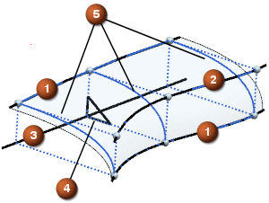

如何使用脊线曲线
创建截面曲面时，除了圆角—桥接类型之外，都需要脊线来控制计算出的截面平面的方位。
在脊线的每个点上，NX 都会构造一个与脊线垂直的截面平面。
然后 NX 让平面与每个选定的引导线、肩线、顶线、斜率控制曲线以及面相交，以获得一个点集。
下一步，NX 将使用信息来构建二次截面曲线。
计算的截面曲线随后将用于生成曲面。
|
 |
|
使用脊线时要注意以下内容：
-
脊线必须光顺，且不能太复杂
-
简单的脊线可以产生简单的 U 参数曲线的阵列，并减少产生自相交或过于复杂曲面的风险
-
对于截面曲面，脊线必须近似与起始和终止线串平行